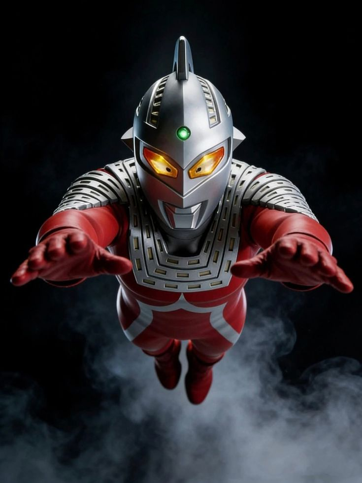

About Seven
Ultra Seven is a legendary warrior who originally arrived on Earth as a galactic cartographer. Moved by the selflessness of a human hero, he chose to stay and protect the planet, taking on the human disguise of Dan Moroboshi to join the elite Ultra Guard. He is iconic for his red-and-silver design and the Eye Slugger, a razor-sharp crest on his head that he throws as a lethal projectile against giant monsters and alien invaders.